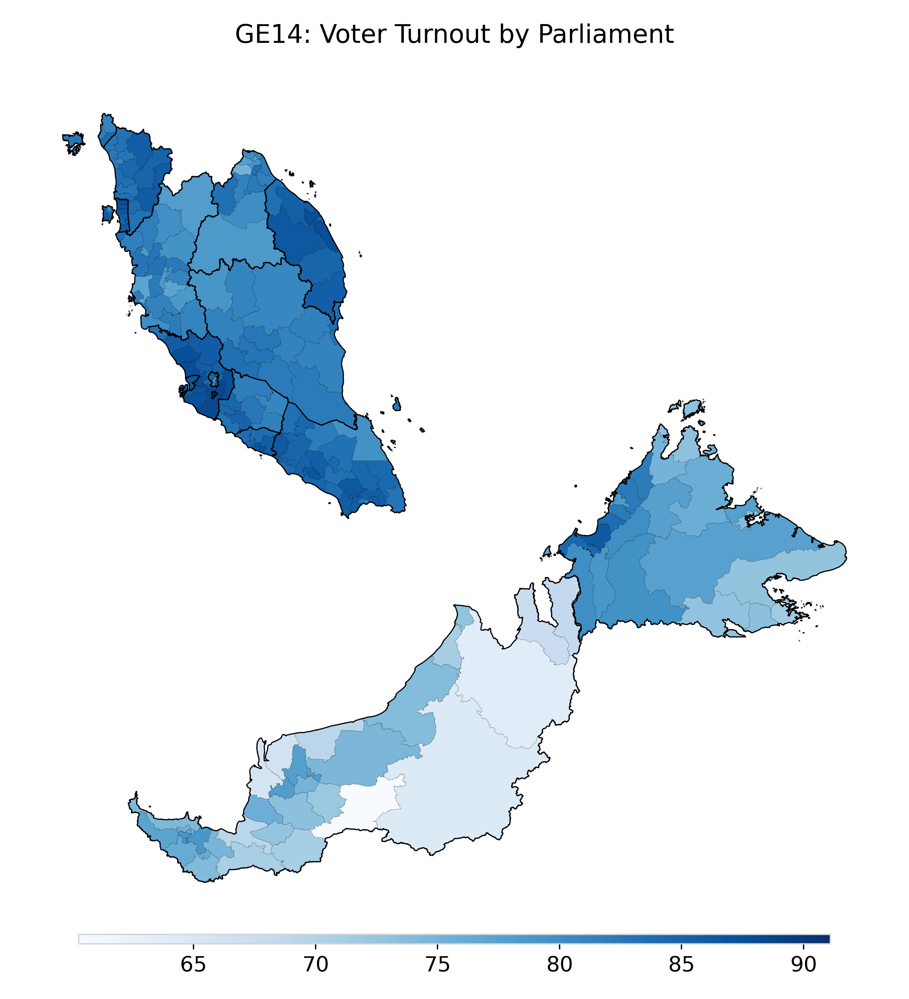
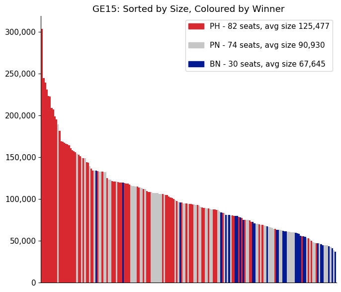

Malaysia's 15th General Election (GE15) was held on Nov 19, 2022.
It was the first general election to be held after the implementation of UNDI18, which allows Malaysians who are 18 years old or above to vote in national elections. The election comes amidst a season of political turmoil (three prime ministers in four years), which followed the watershed May 2018 elections that saw the ruling coalition lose power for the first time since independence. The political landscape has made this election particularly unpredictable.
The aim of my project is to give an overview of Malaysia’s 15th General Election.
VOTER TURNOUT (GE14 VS GE15)
The graphs above show the voter turnout for the 14th and 15th general elections in Malaysia.
From the graphs, we can see that after the implementation of UNDI18,
the number of people who voted in the 15th election was more than the number of people who registered to vote in the 14th election.
VOTER TURNOUT IN GE15 BY PARLIAMENT

TOTAL SEATS WON BY THREE MAJOR PARTIES (PAKATAN HARAPAN, BARISAN NASIONAL, PERIKATAN NASIONAL) IN GE15

AGE, GENDER AND ETHNICITY OF CANDIDATES RUNNING FOR MALAYSIA’S 15TH GENERAL ELECTION